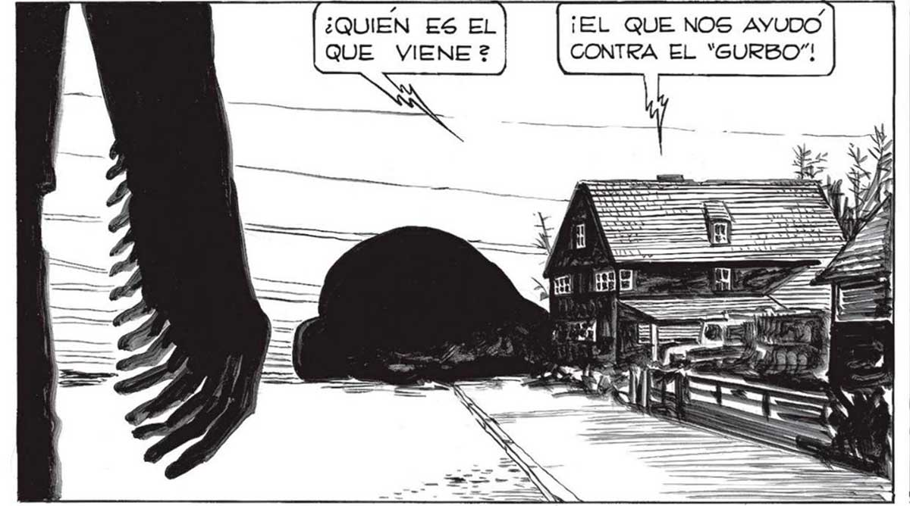
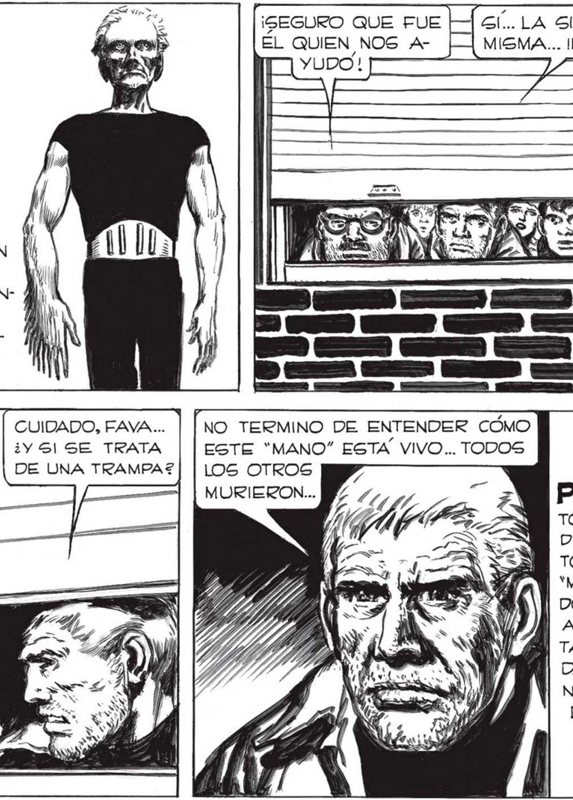
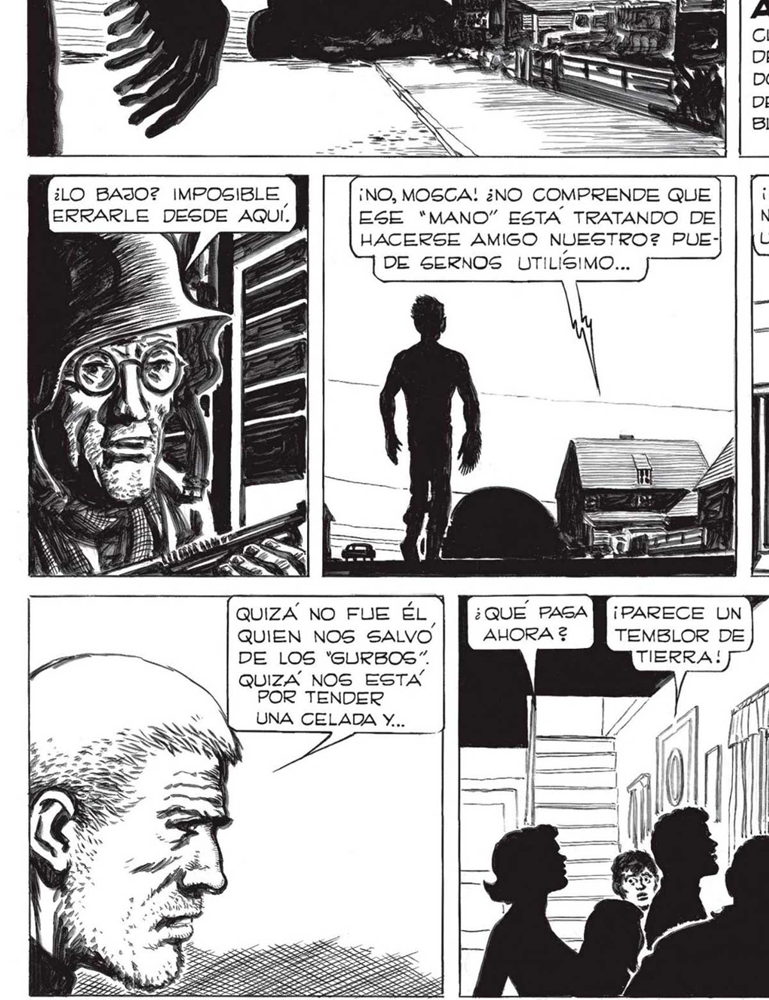
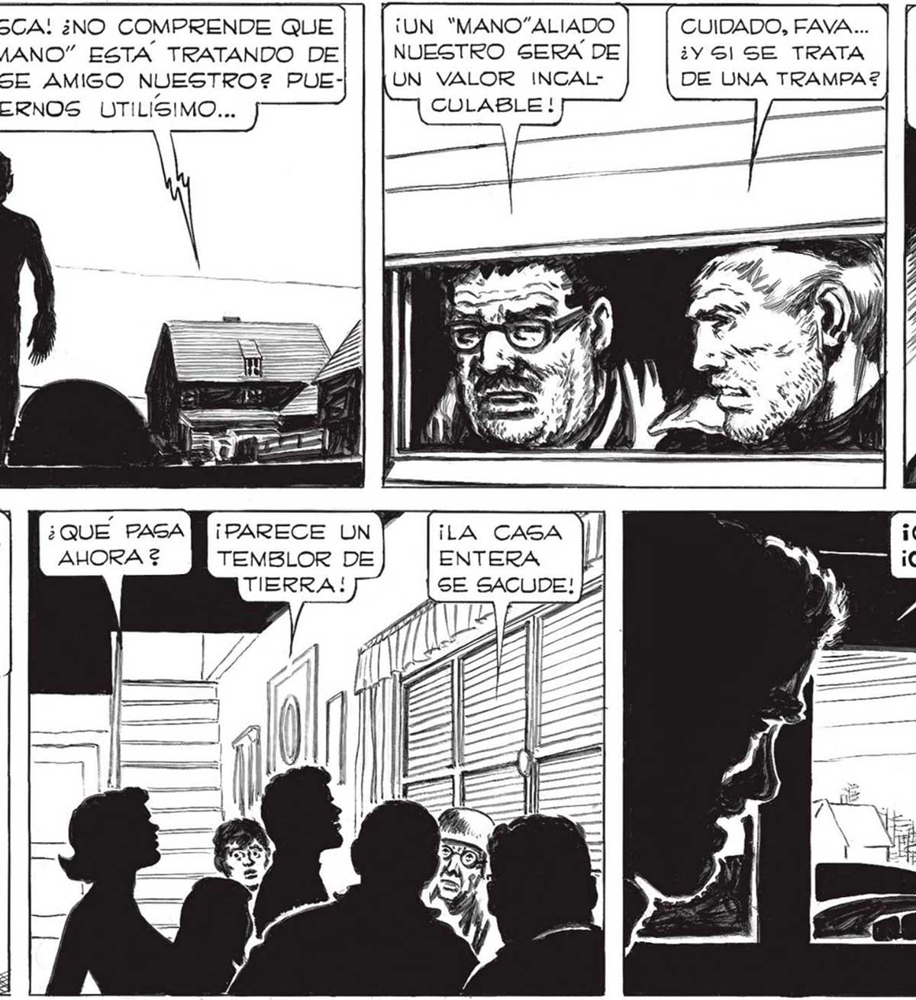
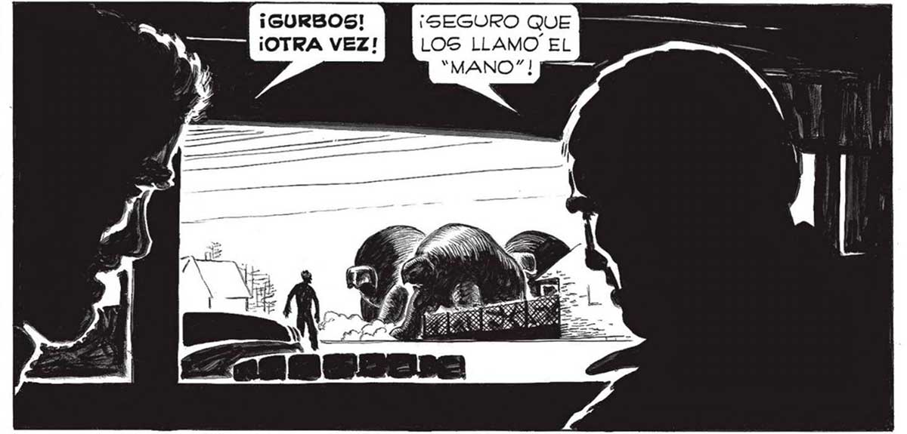

308 ¿LO BAJO? IMPOSIBLE | ERRARLE DESDE AQUI. az UNE £ ¡EL QUE NOS AYUDO CONTRA EL “GURBO”! ¡NO, MOSCA! ¿NO COMPRENDE QUE ESE “MANO” ESTA TRATANDO DE HACERSE AMIGO NUESTRO? PUEDE GERNOS UTILISIMO... | » ¡UN “MANO”ALIADO Álora Lo vimos CON CLARIDAD. AVANZABA DESPACIO, COMO TEMIENDO ALGO. APARTADA DEL CUERPO, BIEN VIS! BLE, LA MANO PRODIGIOSA . CUIDADO, FAVA.... ¿YS!| SE TRATA DE UNA TRAMPA?2 NUESTRO SERA DE UN VALOR INCALCOULABLE ! QUIZA NO FUE ÉL ¡PARECE UN ¡SEGURO QUE FUE ÉL QUIEN NOS AGl... LA SILUETA ES LA MISMA... INCONFUNDIBLE... NO TERMINO DE ENTENDER CÓMO ESTE “MANO” ESTA VIVO... TODOS LOS OTROS MURIERON... Por Un MOMENTO CREÍ ESCUCHAR DE NUEVO EL LENTO CANTO DE LOS MANOS” MURIÉNDOGE. SÍ, ¿POR QUÉ Í AQUEL'“MANO” ESTABA AÚN CON VIDAZ ¿ACASO EL NO TENÍA LA GLANDULA DEL TERROR? QUIEN NOS SALVO DE LOS “SURBOS”. QUIZA NOS ESTA POR TENDER UNA CELADA Y... TEMBLOR DE ¡GURBOS! ¡SEGURO QUE ¡OTRA VEZ! LOS LLAMO EL “MANO”!




